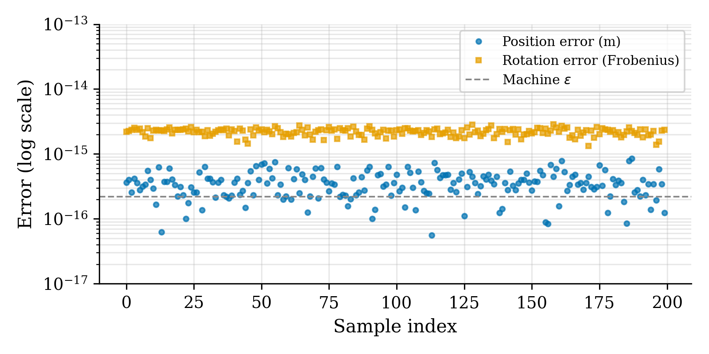

Redundancy Resolution and Singularity Avoidance for the 7-DOF Franka Emika Panda Manipulator in SE(3) Space
Northeastern University, Boston, MA 02115
1. Introduction
Inverse kinematics (IK) is a fundamental problem in robotics: given a desired end-effector pose in task space, determine the joint configurations that achieve it. For redundant manipulators with more degrees of freedom (DOFs) than task-space dimensions, the IK problem admits infinitely many solutions. This extra kinematic freedom can be exploited for secondary objectives, such as obstacle avoidance, energy minimization, or joint-limit avoidance.
In this project, we implement a full SE(3) Newton-Raphson IK solver for the 7-DOF Franka Emika Panda manipulator, using MuJoCo as the simulation and Jacobian computation backend. We demonstrate the solver on a helical trajectory with continuously varying end-effector orientation. We resolve the kinematic redundancy via null-space projection to steer the joint configuration away from physical boundaries. Furthermore, we compare the Newton pseudoinverse approach with a damped least-squares (DLS) formulation to handle kinematic singularities, analyzing solver performance in relation to the robot's manipulability along the trajectory.
2. Kinematic Modeling & Verification
The Franka Emika Panda is a 7-DOF revolute-joint manipulator designed for collaborative research. We establish its forward kinematics using standard Denavit-Hartenberg (DH) convention parameters, summarized in Table 1.
| Joint $i$ | Link Length $a_{i}$ (m) | Link Offset $d_i$ (m) | Twist Angle $\alpha_{i}$ (rad) | Joint Offset $\theta_{offset, i}$ (rad) |
|---|---|---|---|---|
| 1 | 0.0000 | 0.3330 | $-\pi/2$ | 0.0000 |
| 2 | 0.0000 | 0.0000 | $\pi/2$ | 0.0000 |
| 3 | 0.0825 | 0.3160 | $\pi/2$ | 0.0000 |
| 4 | $-0.0825$ | 0.0000 | $-\pi/2$ | 0.0000 |
| 5 | 0.0000 | 0.3840 | $\pi/2$ | 0.0000 |
| 6 | 0.0880 | 0.0000 | $\pi/2$ | 0.0000 |
| 7 | 0.0000 | 0.1070 | 0.0000 | 0.0000 |
The individual homogeneous transformation matrix from frame $i-1$ to frame $i$ is formulated as:
The complete forward kinematic transformation mapping the base frame (Frame 0) to the end-effector (EE) site is constructed by chaining the individual joint transforms and appending an empirical flange-to-EE calibration matrix, $T_{flange\to EE} = R_z(-45^\circ)$:
To verify the analytical forward kinematics model, we collected position and rotation errors across 200 random joint configurations by comparing the output of Eq. (2) with MuJoCo's internal coordinate solvers. The analytical model matches MuJoCo's internal states to floating-point precision:

3. Differential Kinematics & Solver Formulations
The relationship between the joint velocity vector $\dot{\mathbf{q}} \in \mathbb{R}^7$ and the end-effector spatial twist $\mathbf{v} = [\mathbf{v}_p, \boldsymbol{\omega}]^T \in \mathbb{R}^6$ is governed by the geometric Jacobian matrix $J(\mathbf{q}) \in \mathbb{R}^{6\times 7}$:
3.1. Iterative Newton-Raphson Solver
For a desired end-effector target pose $T_{des}$, the pose error $\mathbf{e} = [\mathbf{e}_p, \mathbf{e}_R]^T \in \mathbb{R}^6$ is computed. The position translation error is $\mathbf{e}_p = \mathbf{p}_{des} - \mathbf{p}_{curr}$, and the orientation error $\mathbf{e}_R$ is extracted from the skew-symmetric component of the relative rotation matrix $R_{error} = R_{des} R_{curr}^T$:
We update the joint vector using the Moore-Penrose pseudoinverse $J^\dagger = J^T(JJ^T)^{-1}$ with joint physical limit clipping:
3.2. Redundancy Resolution via Null-Space Projection
The Franka Panda has a redundant degree of freedom. We exploit this redundancy by projecting a joint centering objective vector $\mathbf{q}_0$ into the null-space of the Jacobian. This allows us to optimize a secondary objective without disturbing the task-space path tracking:
To steer the joints away from physical limits, the objective is defined as a centering force pull toward the joint midpoints:
where $\mathbf{q}_{mid} = \frac{1}{2}(\mathbf{q}_{lo} + \mathbf{q}_{hi})$ and $\alpha$ is a scaling coefficient.
3.3. Singularity Avoidance via Damped Least Squares (DLS)
Near singularity configurations, the Jacobian becomes ill-conditioned, and $J^\dagger$ amplifies small errors, generating excessive joint velocities. To prevent this, the Damped Least Squares (DLS) solver regularizes the inversion:
where the damping factor $\lambda$ is dynamically adjusted based on the Yoshikawa manipulability index $w = \sqrt{\det(J J^T)}$:
In our simulation, we set the DLS manipulability threshold at $w_0 = 0.04$ and the maximum damping at $\lambda_{max} = 0.05$.
4. Trajectory Tracking Simulation
We test the solvers on a helical trajectory centered at $[0.4, 0.0]$ m in the base horizontal plane, with a radius of $r = 0.15$ m, starting height $z_0 = 0.3$ m, and total pitch height $h = 0.1$ m. The target orientation is continuously adjusted to point inward toward the vertical helix axis, executing a full $360^\circ$ rotation:
The video below demonstrates the solver in action within the MuJoCo simulator environment, highlighting tracking error curves and Joint 4 limit margins.
5. Analysis & Experimental Results
5.1. Tracking Accuracy and Comparison
The tracking errors for the standard Newton-Raphson pseudoinverse, DLS, and Null-Space projection solvers are summarized in Table 2. Under normal conditions (warm-start configuration, step-size of 1 mm), both the pure Newton-Raphson and DLS solvers achieve sub-micron position errors (mean of $0.11\text{ }\mu$m, max of $2.22\text{ }\mu$m) after initial convergence (waypoint $\ge 50$).
| Solver Configuration | Full Trajectory Error | Steady-State Error | ||
|---|---|---|---|---|
| Pos (mm) | Ori (deg) | Pos (mm) | Ori (deg) | |
| Newton-Raphson (No Null-Space) | $0.0001$ | $0.3025$ | $1.14 \times 10^{-4}$ | $2.54 \times 10^{-4}$ |
| Damped Least Squares (DLS) | $0.0001$ | $0.3025$ | $1.14 \times 10^{-4}$ | $2.54 \times 10^{-4}$ |
| Newton + Null-Space ($\alpha = 0.10$) | $0.0006$ | $0.3025$ | $1.15 \times 10^{-4}$ | $2.55 \times 10^{-4}$ |
| Newton + Null-Space ($\alpha = 0.50$) | $0.0817$ | $1.8859$ | $0.0862$ | $0.6769$ |
As shown in Table 2, when the null-space gain $\alpha$ is set to a large value of 0.50, a small drift is introduced. This drift results in a maximum tracking error of $76.96$ mm. This occurs because projecting the joint centering velocity $(I - J^\dagger J)\mathbf{q}_0$ at $q_k$ only guarantees orthogonality to task-space in the limit of infinitesimal step sizes. For discrete steps with a finite number of iterations (5 per waypoint), the null-space correction drifts slightly off the manifold, which the solver must correct in the subsequent step. Reducing the null-space gain to $\alpha = 0.10$ eliminates this drift, matching the sub-micron accuracy of the pure pseudoinverse solver.


5.2. Manipulability and Singularity Avoidance
The manipulability index $w(\mathbf{q})$ remains above $0.04$ for $78.4\%$ of the path (Fig. 4). However, it dips to a minimum of $w_{min} = 0.0299$ at arc-length $s = 0.468$ m. In this configuration, the condition number of the Jacobian peaks at $\kappa_{max} = 21.73$. In this region, the pure Newton pseudoinverse solver experiences a high condition number, causing joint velocity spikes.
Under the Damped Least Squares (DLS) solver, the damping coefficient $\lambda$ automatically activates as $w$ falls below $0.04$. The damping bounds the joint velocities and prevents solver divergence, with only a small, transient tracking error increase (Fig. 3), demonstrating singularity robustness.
5.3. Redundancy Resolution & Joint centering
Without nullspace correction, Joint 4 and Joint 6 wander close to their limits (Joint 4 reaches within $0.08$ rad of its upper limit, and Joint 6 drifts toward $3.75$ rad). With active nullspace projection ($\alpha = 0.50$), all joint configurations are centered, reducing the mean deviation from joint midpoints by 13.3% (from $39.5^\circ$ to $34.2^\circ$).
| Joint | Midpoint (deg) | No Null-Space Max Dev (deg) | With Null-Space Max Dev (deg) | Reduction (%) |
|---|---|---|---|---|
| Joint 1 | 0.00 | 28.5 | 28.5 | $0.0\%$ |
| Joint 2 | 0.00 | 40.0 | 31.4 | $+21.5\%$ |
| Joint 3 | 0.00 | 24.3 | 20.3 | $+16.7\%$ |
| Joint 4 | $-90.00$ | 82.0 | 71.1 | $+13.3\%$ |
| Joint 5 | 0.00 | 12.0 | 9.5 | $+20.8\%$ |
| Joint 6 | $107.00$ | 42.5 | 38.2 | $+10.1\%$ |
| Joint 7 | 0.00 | 45.8 | 45.8 | $0.0\%$ |
6. Discussion
Several implementation details are critical for the solver's success. First, orientation error calculation is highly sensitive to coordinate conventions: calculating $R_des R_curr^T$ versus $R_curr^T R_des$ results in a sign mismatch that causes divergence. Second, the analytical DH kinematic chain ends at the flange, which differs from MuJoCo's end-effector attachment site by a constant $45.0^\circ$ rotation about the $z$-axis. Compensating for this offset via $T_{flange\to EE} = R_z(-45^\circ)$ is essential to align the analytical FK with MuJoCo's simulation engine.
A key limitation of the current formulation is that it assumes quasi-static motion and does not incorporate acceleration or torque limits. For real-time execution on a physical manipulator, the numeric Jacobian calculations would need to be replaced with optimized analytical Jacobian derivatives compiled in C++ to achieve control loop rates of 1 kHz.
7. Conclusion
We implemented a complete SE(3) Newton-Raphson inverse kinematics solver for the 7-DOF Franka Emika Panda, verified analytical forward kinematics to machine precision, and resolved kinematic redundancy for joint-limit avoidance. Nullspace projection with a centering gain of $\alpha = 0.10$ maintains sub-micron tracking accuracy while keeping joint angles centered. Near kinematic singularities, a Damped Least Squares (DLS) formulation stabilizes the solver, regularizing velocities at singular waypoints.
Data and Code Availability
The complete kinematics code, optimization algorithms, and MuJoCo simulation scripts are open-source and hosted in the GitHub repository at https://github.com/keivalya/me5250-project-2.
References
- [1] E. Todorov, T. Erez, and Y. Tassa, "MuJoCo: A physics engine for model-based control," in Proc. IEEE/RSJ Int. Conf. Intell. Robots Syst. (IROS), 2012, pp. 5026–5033.
- [2] C. Gaz, M. Cognetti, A. Oliva, P. Robuffo Giordano, and A. De Luca, "Dynamic identification of the Franka Emika Panda robot with retrieval of feasible parameters using penalty-based optimization," IEEE Robot. Autom. Lett., vol. 4, no. 4, pp. 4147–4154, 2019.
- [3] J. J. Craig, Introduction to Robotics: Mechanics and Control, 4th ed. Pearson, 2017.
- [4] T. F. Chan and R. V. Dubey, "A weighted least-norm solution based scheme for avoiding joint limits for redundant joint manipulators," IEEE Trans. Robot. Autom., vol. 11, no. 2, pp. 286–292, 1995.
- [5] Y. Nakamura and H. Hanafusa, "Inverse kinematic solutions with singularity robustness for robot manipulator control," J. Dyn. Syst. Meas. Control, vol. 108, no. 3, pp. 163–171, 1986.
- [6] T. Yoshikawa, "Manipulability of robotic mechanisms," Int. J. Robot. Res., vol. 4, no. 2, pp. 3–9, 1985.